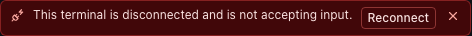
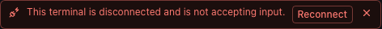
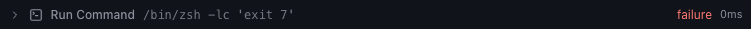
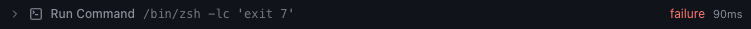
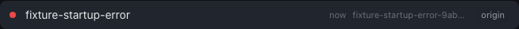

Design tasks / 00002
00002 · Replace hard-coded red and rose classes with the failure token
Problem
Failure text appears as text-red-300 (47), red-400 (37),
red-500 (17), red-100/200/600/700 and rose-400.
Together with the destructive and failure tokens that is six or
seven reds for one meaning.
Find every instance
grep -rnE --include=*.tsx "(text|bg|border)-(red|rose)-[0-9]{2,3}" apps/web/src | grep -v "\.test\."Scope
| Where | What |
|---|---|
apps/web/src/components/terminal/TerminalDisconnectedBanner.tsx:28 |
red-500 border over a red-950 fill; convert to a failure tint |
apps/web/src/components/chat/ComposerIconPicker.tsx:54 |
Keep. Bypass is the documented red-500 risk marker |
every other hit of the grep above |
classify, then replace |
Approach
- Run the grep and classify each hit in Notes: failure (an outcome or error), risk (Bypass or another documented risk marker), identity (a category color) or destructive action.
-
Map failure text to
text-failure, borders toborder-failure/NNand tints tobg-failure/NN. Map destructive fills tobg-destructive. - Leave risk hits alone, including the Bypass and root-terminal warnings.
- Replace the red-950 banner background with a failure tint so it matches the other error banners.
Required evidence: before and after
Every slot needs a before image (captured first, before editing any code) and an
after image. Use the same profile, fixture data, theme, viewport and zoom for both.
Save PNGs under design/images/00002/ using the exact file names shown. See
How to capture.
Terminal disconnected banner desktop 1440×900
Open a terminal tab and drop the connection (stop the backend terminal or block its stream).


Transcript with a failed tool call desktop 1440×900
Use a fixture session with a failing command so the result row reads failure.


Sidebar row for an environment in error desktop 1440×900
Force an environment into the error state in a throwaway profile.

Out of scope
text-destructive(task 00001).- The Bypass mode icon.
Verification
mise run test:logged -- --name web-typecheck -- bun run --cwd apps/web typecheck
NODE_ENV=test mise run test:logged -- --name terminal-banner -- bun --cwd=apps/web test src/components/terminal --parallel=2 --only-failures
mise run format:check
mise run lint
React tests in this repo need NODE_ENV=test in build shells. Real-browser
check: use a throwaway dev:test profile named design-00002, never
a production instance.
Acceptance checklist
-
Before images captured on unmodified code for every slot below, and committed
under
design/images/00002/. - After images captured after the change, with the same profile, data, theme, viewport and file names, and committed beside the before images.
- Every image slot on this page shows a picture (the evidence badge reads “6 / 6”).
- I have looked at each pair and written what changed, and anything that did not change that should have, in Notes.
- Hits were classified in Notes, and each decision below is recorded with the option chosen.
-
Type-check and the owning tests pass as shown under Verification.
mise run format:checkandmise run lintpass. - The browser check includes a page reload and, for layout-affecting changes, the narrow viewport.
- DESIGN.md or PRODUCT.md updated if needed: None expected.
- Status set to Done on this page and in the index.
Notes
Hit classification
The task search returned 125 source lines in the unmodified renderer at
b2c91abb9. Paths below are relative to apps/web/src and use
baseline line numbers. The audit covers the .tsx search in Scope.
-
Failure. Migrated errors, invalid fields, failed and cancelled states, diff
removals, and the negative markers in paired decision and review views. The shared error
tone in
components/agent-mail/agent-mail-ui.tswas migrated alongside its consumers. Existing success styles were outside this task. - Destructive actions. Used the destructive fill for Deny and the confirmation buttons. Container deletion, credential revocation, and machine or route removal use failure-colored foregrounds with a destructive hover wash.
- Risk. Kept Bypass, the root-terminal privilege warning, the advisory graph execution tier, and the high-risk review badge.
- Identity. Kept the Caution callout kind, the canvas alignment guide, Java and Ruby file symbols, the usage-period marker, and the P0 severity category.
Source lines by classification
Failure and negative outcomes (103 source lines)
App.tsx:919components/agent-mail/AgentMailConversationView.tsx:269components/agent-mail/AgentMailPanel.tsx:202, 212, 373components/agent-mail/MailboxDeliverySettings.tsx:71components/build-pipeline/PipelineKeyInformation.tsx:571components/build-pipeline/key-information-tab-sections.tsx:153components/build/BuildStepInstructionsField.tsx:60, 82components/chat/GoalTile.tsx:77, 141components/chat/JsonPayloadPart.tsx:45components/chat/MailTile.tsx:112, 113components/chat/PullRequestUpdateNotice.tsx:15components/chat/SuborkGroup.tsx:22components/claude/ClaudeTmuxChatTab.tsx:1344components/docker/DockerSettings.tsx:432, 437, 447-
components/environments/EnvironmentSettingsDialog.tsx:176, 1117, 1121, 1156, 1161 components/environments/StatusIndicator.tsx:24, 25components/federation/AgentsMdApprovalDialog.tsx:384components/graph-designer/GraphTemplateReviewPanel.tsx:64components/graph-launch/GraphLaunchDialog.tsx:232, 273, 279, 357components/graph-launch/GraphLaunchFields.tsx:24components/kanban/KanbanCard.tsx:132components/kanban/TicketSyncStrip.tsx:49components/layout/PullRequestCheckStatus.tsx:36components/projects/CoordinatorPanelNotices.tsx:352components/projects/ProjectSchedulesView.tsx:97components/review/MultiReviewLaunchDialog.tsx:601components/review/ReviewLensField.tsx:143components/review/ReviewValidationStatus.tsx:285components/review/StructuredReviewReportView.tsx:674-
components/settings/GlobalSettings.sections.tsx:1865, 1879, 1925, 1929, 1967, 1970 components/settings/McpSettings.tsx:371, 373components/settings/PermissionsSettings.tsx:204components/settings/ScheduleDialog.tsx:666components/settings/ScheduleGraphFields.tsx:197, 251, 258components/settings/ScheduleManager.tsx:71, 272, 495components/settings/SelfImprovementLists.tsx:146components/settings/SelfImprovementSettings.tsx:271components/settings/agent/ReviewLensPresetsEditor.tsx:180components/settings/machines/FleetUpdatePolicySection.tsx:91components/settings/machines/MachineSettingsDialog.tsx:415-
components/settings/machines/MachinesSettings.tsx:303, 304, 625, 828, 843 components/settings/machines/SshRouteDialog.tsx:142, 250components/settings/machines/machine-ui.tsx:65components/settings/mcp-servers/McpApplyStatus.tsx:35components/settings/mcp-servers/McpErrorNotice.tsx:101, 106components/settings/mcp-servers/McpServerEditor.tsx:414components/settings/mcp-servers/McpServerForm.tsx:46, 231components/settings/mcp-servers/McpSourceList.tsx:43, 276components/settings/settings-config.tsx:90components/sidebar/ServerConnectionSwitcher.tsx:456components/terminal/DiffViewerTab.tsx:161, 504, 509, 587, 717, 753components/terminal/FileViewerTab.tsx:758, 759components/terminal/InitializationLogs.tsx:142, 143, 172components/terminal/MonacoFileEditor.tsx:146, 147components/terminal/TerminalDisconnectedBanner.tsx:28, 30, 35, 44components/terminal/TerminalHistoryPanel.tsx:152components/todo/TodoToolPart.tsx:152, 176
Destructive actions (10 source lines)
components/claude/ClaudeTmuxChatTab.parts.tsx:1584components/docker/DockerSettings.tsx:525components/settings/McpSettings.tsx:521-
components/settings/machines/DeviceConnectionSection.tsx:341, 445, 516 -
components/settings/machines/MachineSettingsDialog.tsx:491, 503, 527 components/settings/machines/NodeRoutesSection.tsx:156
Risk markers (4 source lines)
components/chat/ComposerIconPicker.tsx:55components/graph-launch/GraphLaunchRoleField.tsx:29components/layout/ActionBar.view.tsx:897components/review/StructuredReviewReportView.tsx:589
Identity and category colors (8 source lines)
components/chat/rich/RichCallout.tsx:45, 46components/design/design-canvas-gestures.tsx:390components/files-panel/FileIcon.tsx:82, 95, 96components/layout/AgentInfoButton.panels.tsx:1032components/review/StructuredReviewReportView.tsx:32
Decisions
-
One failure color. Chose the existing
failuretoken for foregrounds, status dots, and translucent borders and washes. Keeping the original shades would preserve each surface’s previous contrast and hue but would retain multiple colors for the same outcome. - Readable overlay. Chose a 10% failure wash and a darkened backdrop for the terminal and backend banners. A wash alone is visually lighter but allows bright content behind the banner to lower text contrast.
-
Destructive confirmation. Deny, Forget and Remove use the existing
destructivefill with black labels. The hover and pressed fills keep 95% and 90% opacity to maintain at least 4.5:1 label contrast.
What changed in each image pair
Captured the live renderer in the same isolated headless design-00002 fixture
profile at 1440×900, dark theme, and 1× zoom. Each PNG crops the relevant element from the
desktop viewport. The before images came from the clean b2c91abb9 checkout. The
profile restarted on the changed renderer with the same fixture project and environments.
Both runs disabled host seeding, host reachability checks, and real agent credentials. The fixture used a downloaded Codex toolchain and a loopback test model.
- Terminal disconnected banner. Interrupting terminal startup in the browser shows the real recovery banner. The red-950 surface becomes a 10% failure wash. The text, icons, and borders now share the failure color. The banner appeared again on reload and Reconnect recovered when the fault was lifted. The banner also fit at 390×844.
-
Failed tool result. A fixture Codex turn ran a local command that returned exit
code 7. The fixture repeated that command after the stack restart, and the collapsed row
rehydrated after page reload in both captures. The failure badge already used
text-failureon the baseline, so its color is identical across the pair. The runtime label shows the measured duration of each invocation. -
Environment error status. A failed startup with the fixture repository temporarily
unavailable persisted a backend
errorstatus. The dot on the sidebar search result changed frombg-red-500tobg-failure.